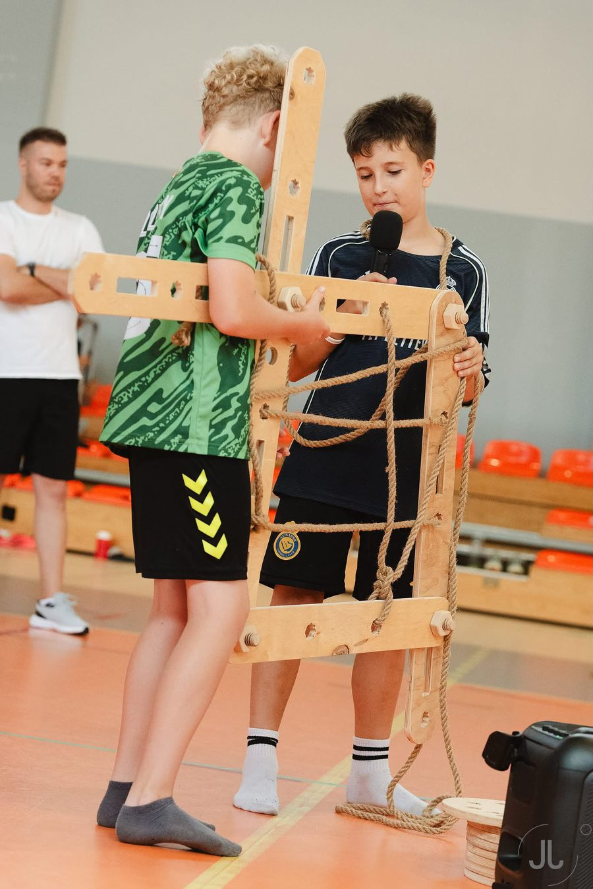

01
Wsparcie celów dydaktycznych
Wielkogabarytowe elementy angażują motorykę całego ciała i stymulują myślenie przestrzenne — u dziewczyn i chłopaków tak samo. Dzieci, bawiąc się, uczą się kooperacji, negocjacji ról i podstaw inżynierii (STEAM).